Fonts for web design: a primer
Introduction
Modern CSS provides web designers with an unprecedented level of control over online typography. Restrictions are still imposed however by the limited number of “common” fonts—those typefaces that are generally available cross-platform. This article looks at the fonts web designers have available to them, and also considers their suitability for various tasks.
Along with exploring Microsoft’s “Core fonts for the Web” pack, which includes the most common online fonts, the article also looks at more recent typefaces that can work well online, along with briefly noting the new screen fonts created for Vista.
Types of fonts
Fonts come in various styles, but most can be considered serif or sans-serif. Serif fonts have serifs—non-structural details and elements on the ends of the strokes on some letters and symbols. Sans-serif fonts (“sans-serif” literally translates as “without serif”) lack serifs. A comparison of sans-serif and serif characters can be seen in Figure 1.
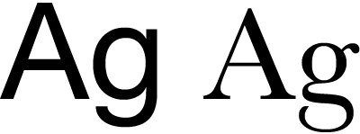Figure 1: Left: sans-serif font Helvetica Neue; right: serif font Baskerville.
Traditionally, serif fonts have been popular for body copy in printing, due to their readability. Flow is assisted by the serifs, making it easier to read a passage of text. Typically, sans-serif fonts have been historically utilised for shorter blocks of text, such as headings, or other elements that need to be displayed in a bold manner, such as short passages on posters or adverts. However, today’s print publications—especially in Europe—often use sans-serif fonts for body copy, due to their clean and modern appearance, despite potential usability issues.
Online, the low resolution of computer screens reduces the advantage of serifs. Early PCs were not able to anti-alias text, leading to serifs at a small size becoming literally unreadable. Even with more modern PCs now able to anti-alias text, serif fonts can become indistinct if displayed at too small a size. Therefore, purely for reasons of legibility, sans-serif fonts are more popular online, although again designers should be wary of displaying even the boldest and most readable of sans-serif fonts at tiny sizes.
Unlike in print, web designers cannot easily “inject” fonts into a design, and are therefore restricted the typefaces commonly installed across all platforms. Although designers can specify “fall-back” fonts via a CSS font-stack, it’s pointless to use an esoteric and uncommon font as a first choice, since the vast majority of a site’s visitors will never see the type in the way the designer intended. See below for an example of a CSS font-stack.
h1 {
font-family: 'Lucida Grande', 'Lucida Sans Unicode', Lucida, Arial, Helvetica, sans-serif;
}
The following three sections explore the various fonts recommended for use online. The first section deals with the most popular: sans-serif fonts. The next talks about usage of serifs online. And the third details the more specialist fonts that are available for various tasks, but that shouldn’t be used for body copy.
Sans-serif fonts for web headings and body copy
The most common sans-serif fonts online are Arial, Verdana and Trebuchet MS, available via Microsoft’s “Core fonts for the Web”. Arial is superficially similar to Helvetica, one of the most common sans-serif typefaces in use, although it actually has more in common with Univers. In any case, it’s a fairly simple design, and its prominence likely stems from its heavy use within various Windows applications. Online, Arial’s design isn’t ideal for body copy, although its bold and fairly slim characters are generally well suited to headings.
Unlike Arial, Verdana was specifically designed to be read at small sizes, and its wide proportions and loose letter-spacing make it ideal for web body copy. Conversely, its spacious nature is not well-suited to display at large sizes, and headings styled in Verdana generally look ugly.
The third sans-serif from the original Microsoft set is Trebuchet MS. Arguably offering more character than Arial and Verdana, Trebuchet MS is a reasonable choice for body copy, but it can be tiring to read over long passages, and like Arial it suffers at very small sizes. It is however a good choice to wheel out for striking headings, not least because of its relative rarity online. See Figure 2 for a comparison of the three Microsoft core sans-serif fonts.
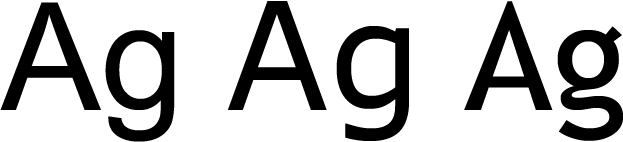Figure 2: Arial, Verdana and Trebuchet MS.
Outside of this core trio, you’re heading into murkier territory, although there are a number of fonts common enough to warrant consideration. They should, however, be used with care, and fall-back fonts must be defined for users who don’t have the rarer fonts installed.
One of the most popular fonts with Mac users and designers is Helvetica, which is also common on Linux. However, its lack of penetration on Windows means it’s best suited placed in the penultimate position in a font-stack, before the generic “sans-serif” definition. Figure 3 shows a comparison of Helvetica and Arial, the Microsoft font that’s said to compare with it.
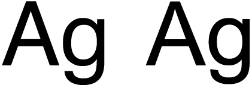Figure 3: Helvetica (left) and Arial (right), the Microsoft font that often draws comparison with the Swiss classic.
Another popular Mac font, Lucida, is more widespread, and forms the basis of a now common font-stack—the one shown earlier in this article. This humanist typeface was popularised by Apple (via Lucida Grande being used throughout Mac OS X), and similar fonts are common on Windows (Lucida Sans Unicode) and Linux (Lucida). It’s a good choice for a website wanting smart, modern body copy.
Century Gothic is another font outside of the “big three” that’s gained a lot of ground in recent years. A round, geometric font, its stylised nature makes it impressive and exciting for headings and short passages of text, although it’s a poor choice for lengthy body copy.
Elsewhere, Tahoma is a common font for designers looking for an alternate narrow sans-serif to replace the overly popular Arial and surprisingly uncommon Helvetica—at least on Windows and Mac. Lucida Grande, Century Gothic and Tahoma are shown in Figure 4.
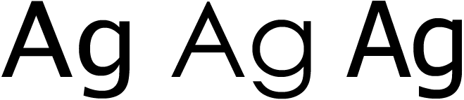Figure 4: Lucida Grande, Century Gothic and Tahoma.
The final group of fonts within this section are the three sans-serif “C” fonts from Microsoft, available with Windows Vista. Calibri, Candara and Corbel can be seen in Figure 5, and are suitable replacements for Arial, Trebuchet MS and Verdana, respectively. Corbel is the most stylish of the fonts—Candara’s bandy appearance is suspect at large sizes, and Calibri’s rounded edges make it a poor choice for headings, but a good Arial replacement for body copy. Note, however, that these fonts aren’t nearly as widespread as the Microsoft core fonts, and although they can be made available by installing free Microsoft software (such as PowerPoint Viewer 2007), they certainly shouldn’t be considered as defaults.
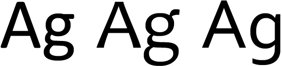Figure 5: Calibri, Candara and Corbel from Windows Vista’s new “C” fonts.
Serif fonts for web headings and body copy
As previously mentioned, serif fonts are less common online, due to more obvious degradation and poor readability at small sizes. However, if your design calls for a more “traditional” appearance, serifs can be used; also, the lack of serif use online means sites that use such fonts tend to stand out from the crowd.
The main rule with serifs is the size them larger than you would for sans-serif fonts, to ensure legibility isn’t compromised. If in doubt, it’s best to size serifs slightly too large rather than too small.
In terms of typefaces, the selection is more limited than with sans-serifs. The two most common serifs are Times New Roman (with Times being a similar equivalent for Linux) and Georgia—see Figure 6. To some extent, Times and Georgia mirror Arial and Verdana, in that the latter font in each of those pairings is more suited to screen due to wider characters and better legibility at small sizes. Due to system defaults, however, the former is more widely used.
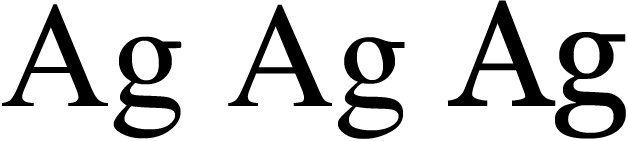Figure 6: Times New Roman, Times and Georgia.
Outside of the core fonts, there are are few common alternatives for Linux, but Windows and Mac users are well-served by Palatino variants. On Windows, Palatino Linotype is installed by default, and Mac users will have access to Palatino if they have Classic or iWork. Also, Mac owners with Office will have the virtually identical Book Antiqua (see Figure 7). All of these fonts are a suitable replacement for Georgia or Times variants, and are perhaps better-looking than the core fonts.
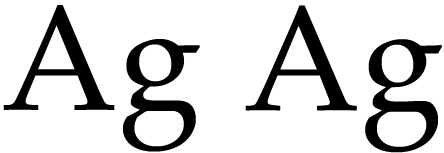Figure 7: Spot the difference: Book Antiqua (left) and Palatino (right).
Once you leave behind the core fonts and Palatino, you’re once again heading for more stylised but less common typefaces. Two “C” fonts are distributed with Vista—Cambria, which acts as a fairly straight replacement for Times New Roman, and Constantia, a quite stylised serif that works well in place of Palatino. Both fonts are shown in Figure 8.
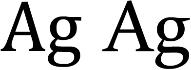Figure 8: Cambria and Constantia.
Mac OS X also has a range of default serifs if you’re looking for something a little more stylised. Baskerville is a good example, with Garamond being an interesting alternative for Windows—see Figure 9.
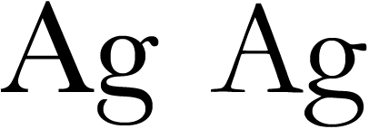Figure 9: Baskerville and Garamond.
Display fonts and specialist typefaces for the Web
This final section briefly looks at specialist fonts. The most useful of these are monospace fonts, which are good for displaying code and scripts. Andale Mono and Courier New are both common across Windows and Mac and are also fairly common on Linux. Despite Courier New being most people’s default choice for monospace type, Andale Mono is a good choice for something that looks less “computery”, but still retains monospacing. For Linux, it’s worth using Courier as a fall-back, due to its prevalence on the system. Figure 10 shows Andale Mono and the two Courier variants.
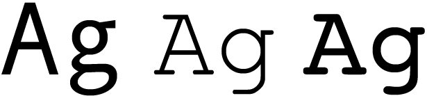Figure 10: Andale Mono, Courier New, and Courier.
Windows also has a couple of additional monospace fonts: Consolas (with Vista) and Lucida Console, although with these not being remotely widespread on other platforms, they should be used with care. Monaco on the Mac is sometimes suggested as an analog to Lucida Console, but its design isn’t terribly similar, as you can see from Figure 11. A better alternative is Lucida Sans Typewriter.
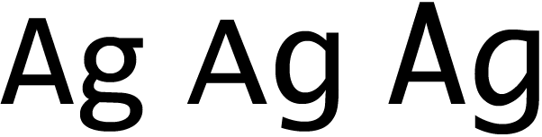Figure 11: Consolas, Lucida Console, and Monaco.
The final trio of fonts returns us to Microsoft core fonts—they are Arial Black, Comic Sans MS and Impact, shown in Figure 12. All three are totally unsuitable for body copy, and although Arial Black and Impact have some potential use for headings, the massively overused Comic Sans MS should really be avoided entirely, due to its unprofessional nature. Some might argue that Comic Sans MS has some validity for children’s sites, but it’s best avoided entirely—just use smart sans-serifs at a larger size instead.
Note that Macs often have display issues when Arial Black and Impact are rendered in bold, so avoid doing so. With headings, ensure the font-style property is set to normal, thereby overriding browser defaults.
Figure 12: Arial Black, Comic Sans MS, and Impact.
Final thoughts
It’s clear from this article that although online typography doesn’t have access to anywhere near the wealth of fonts accessible to print designers, there’s more choice than Arial and Verdana. When working on designs, try using something a little different, to make your site stand out from the crowd. And remember: choosing a font isn’t typography—you also need to be mindful of leading, kerning, general readability (notably with the number of characters per line), colours and more. Picking a font is just the beginning.
Resources
- Microsoft typography
- Fonts with Windows Vista
- Fonts with Mac OS X 10.5 (“Leopard”)
- Fonts with Mac OS X 10.4 (“Tiger”)
This article is licensed under a Creative Commons Attribution, Non Commercial - Share Alike 2.5 license.
Comments
The forum archive of this article is still available on My Opera.
-
It seems Opera/Win override css font-family courier with any current monospace font choosen (consolas to me).
-

This is best site to spent time on .I just stumbled upon your chatty blog and wanted to say that I have really enjoyed reading your very well written blog posts. I will be your frequent visitor, that's for sure.
No new comments accepted.Burov Dmitry
Thursday, July 19, 2012
But i can not find official word on this.
Is it so ?
Spurred by http://xwiki.475771.n2.nabble.com/Diff-font-is-td7580425.html
singhprofile99
Tuesday, December 10, 2013
best penis enlargement